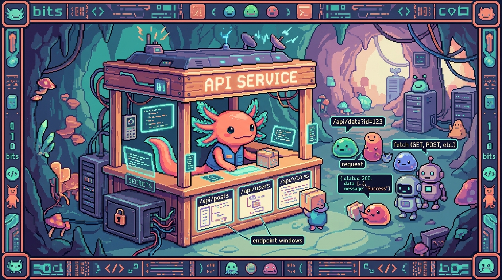

Capitulo 13 — Construir tu propia API

Hasta ahora siempre fuiste cliente: tu codigo hacia
fetcha la API de alguien mas (GitHub, OpenAI, Supabase) y recibia una respuesta. En este capitulo cambias de bando. Vas a construir tu propia API: el lugar al que otros (incluido tu propio frontend) le hacenfetch. Bit el ajolote se frota las manitas: "Hoy dejamos de pedir prestada la cocina ajena... y montamos la nuestra." Lo haremos con dos herramientas reales que usan tus repos: las rutas de API de Next.js (como en Faro) y los Cloudflare Workers (como en tunal-digital). Y vamos a insistir, mucho, en lo mas importante: tus claves secretas viven en el servidor, jamas en el navegador.
1. ¿Por que necesito una API propia?
En el modulo 03 aprendiste fetch. Probablemente pensaste: "si desde el navegador puedo llamar a la API de OpenAI, ¿para que quiero un backend en medio?". Excelente pregunta. La respuesta corta: por seguridad y por control.
Imagina el chat de IA de tunal-digital. Es un sitio de HTML, CSS y JavaScript "vanilla" (sin frameworks) con un cotizador, un formulario y un chat que responde con inteligencia artificial. Ese chat necesita llamar a la API de Claude (Anthropic). Para llamar a Claude necesitas una clave de API, algo como sk-ant-....
Si pusieras esa clave en el JavaScript del navegador, cualquier visitante podria abrir las herramientas de desarrollador, copiarla y gastar tu dinero. Por eso tunal-digital no llama a Claude desde el navegador: llama primero a un Cloudflare Worker (un pequeño servidor), y es el Worker quien guarda la clave y habla con Claude. El navegador nunca ve el secreto.
🟦 ¿Que significa? — API propia (backend)
Una API propia es un programa que vive en un servidor y expone direcciones (URLs) a las que tu aplicacion le pide cosas. Tu codigo de servidor decide que datos entrega, que valida y que esconde. Para que sirve: centralizar logica, proteger secretos y ser el unico que habla con servicios caros o privados. Donde se usa: en Faro son las rutas dentro de
app/api/...; en tunal-digital es el Cloudflare Worker que atiende el chat.🟦 ¿Que significa? — Cliente y servidor
El cliente es quien pide (el navegador, tu app de celular). El servidor es quien responde (tu API). El cliente nunca debe guardar secretos porque vive en la maquina del usuario, donde cualquiera puede mirar. Para que sirve: separar lo publico (lo que ve el usuario) de lo privado (claves, logica). Donde se usa: en RachaSimple el cliente es React; el servidor de autenticacion es Supabase. En Faro el cliente es la interfaz y el servidor son las rutas de API de Next.js.
2. Una ruta de API en Next.js (route handler)
Faro esta hecho con Next.js + React + TypeScript. Next.js trae una manera elegante de crear endpoints: pones un archivo route.ts dentro de una carpeta bajo app/api/, y esa carpeta se convierte en una URL.
🟦 ¿Que significa? — Endpoint
Un endpoint es una direccion concreta de tu API a la que se le pide algo, por ejemplo
/api/proyectos. Cada endpoint hace una tarea. Para que sirve: organizar tu API en "puertas" claras, cada una con su proposito. Donde se usa: Faro tiene endpoints como/api/analyze(dispara el analisis con IA) o rutas para leer proyectos de GitHub.🟦 ¿Que significa? — Route handler (manejador de ruta)
En Next.js, un route handler es una funcion que responde a un endpoint. Se escribe en un archivo
route.tsy exportas funciones con el nombre del metodo HTTP:GET,POST, etc. Para que sirve: decir "cuando alguien haga GET a esta URL, ejecuta esta funcion". Donde se usa: todas las rutas de API de Faro son route handlers.🟦 ¿Que significa? — Metodo HTTP (GET, POST...)
Un metodo HTTP es el "verbo" de la peticion.
GET= "dame datos" (no cambia nada).POST= "aqui van datos, crea/procesa algo". Tambien existenPUT(actualizar) yDELETE(borrar). Para que sirve: comunicar la intencion de la peticion. Donde se usa: Faro usaGETpara listar proyectos yPOSTpara enviar datos y pedir un analisis con IA.
Asi se ve un route handler sencillo en Faro. El archivo estaria en app/api/saludo/route.ts:
// app/api/saludo/route.ts
import { NextResponse } from "next/server";
// Responde a GET /api/saludo
export async function GET() {
return NextResponse.json({ mensaje: "Hola desde la API de Faro" });
}
Si tu app esta corriendo y entras a http://localhost:3000/api/saludo, recibes { "mensaje": "Hola desde la API de Faro" }. ¡Ya construiste tu primera API!
🟦 ¿Que significa? — NextResponse.json()
NextResponse.json(objeto)es una funcion de Next.js que toma un objeto de JavaScript, lo convierte a JSON y lo envia al cliente con las cabeceras correctas. Para que sirve: devolver datos de forma estandar sin armar la respuesta a mano. Donde se usa: practicamente todas las rutas de API de Faro terminan con unNextResponse.json(...).🟦 ¿Que significa? — JSON
JSON (JavaScript Object Notation) es un formato de texto para intercambiar datos. Se ve como un objeto de JavaScript: llaves, claves entre comillas y valores. Es el idioma universal de las APIs. Para que sirve: que cliente y servidor se entiendan, sin importar el lenguaje de cada uno. Donde se usa: Faro, tunal-digital y hasta PolyPaw (que guarda datos en archivos
.json) usan JSON.💡 Tip
La carpeta es la URL.
app/api/proyectos/route.ts→/api/proyectos.app/api/proyectos/[id]/route.ts→/api/proyectos/123(donde[id]es un parametro variable). Crear endpoints es, literalmente, crear carpetas.
3. Recibir datos: leer lo que manda el cliente
Una API aburrida solo responde lo mismo siempre. Una API util recibe datos, los procesa y responde en consecuencia. En Faro, cuando el usuario dispara un analisis, el frontend envia (por POST) que proyecto analizar.
🟦 ¿Que significa? — Request (peticion)
El request es el objeto que representa lo que el cliente envio: el metodo, las cabeceras y el cuerpo (body). Tu route handler lo recibe como argumento. Para que sirve: leer que pidio el usuario para responder lo correcto. Donde se usa: las rutas
POSTde Faro reciben unrequestpara sacar el id del proyecto.🟦 ¿Que significa? — Body (cuerpo de la peticion)
El body es la "carga" que el cliente envia, normalmente en JSON. En un
GETcasi nunca hay body; en unPOSTes donde van los datos. Para que sirve: mandar informacion al servidor (un formulario, un id, un texto). Donde se usa: el chat de tunal-digital envia en el body el mensaje del usuario; Faro envia el id del proyecto a analizar.
// app/api/analizar/route.ts
import { NextResponse } from "next/server";
export async function POST(request: Request) {
// Leemos el JSON que mando el cliente
const datos = await request.json();
const proyectoId = datos.proyectoId;
// ... aqui Faro buscaria el proyecto y llamaria a OpenAI ...
return NextResponse.json({ ok: true, proyectoId });
}
Fijate en await request.json(). Como leer el cuerpo es una operacion que toma su tiempo, es asincrona, asi que usamos await (eso lo viste en el modulo 03 con fetch).
🔎 En tu codigo
En el frontend de Faro, llamar a esa ruta se ve asi:
ts const res = await fetch("/api/analizar", { method: "POST", headers: { "Content-Type": "application/json" }, body: JSON.stringify({ proyectoId: "abc-123" }), }); const data = await res.json();ElJSON.stringifyconvierte tu objeto a texto JSON para enviarlo. Del otro lado,request.json()lo vuelve a convertir en objeto. Ida y vuelta.
4. Validar: nunca confies en el cliente
Aqui Bit se pone serio (lo cual es raro en un ajolote). Cualquiera puede mandar lo que sea a tu API. Un usuario malintencionado puede enviar un body vacio, un id que no existe, o texto enorme para tumbar tu servidor. Tu API debe validar antes de actuar.
🟦 ¿Que significa? — Validar
Validar es revisar que los datos que llegaron cumplan las reglas (que existan, que sean del tipo correcto, que no esten vacios) antes de usarlos. Para que sirve: evitar errores, datos basura y ataques. Donde se usa: antes de llamar a OpenAI, Faro valida que venga un proyecto valido; tunal-digital valida que el mensaje del chat no este vacio.
export async function POST(request: Request) {
const datos = await request.json();
const proyectoId = datos?.proyectoId;
// Validacion: ¿vino el id y es texto?
if (!proyectoId || typeof proyectoId !== "string") {
return NextResponse.json(
{ error: "Falta proyectoId o no es valido" },
{ status: 400 } // 400 = peticion incorrecta
);
}
// Si pasa la validacion, seguimos...
return NextResponse.json({ ok: true, proyectoId });
}
⚠️ Cuidado
"Pero yo controlo el frontend, yo nunca mandaria datos malos." No importa. Tu frontend no es el unico que puede llamar a tu API: cualquiera con la URL puede. Validar en el servidor no es opcional. El navegador es territorio del usuario, no tuyo.
5. Codigos de estado: el semaforo de HTTP
Cada respuesta HTTP lleva un codigo de estado: un numero que resume como salio todo. Ya usaste algunos sin notarlo (el famoso 404).
🟦 ¿Que significa? — Codigo de estado (status code)
Un codigo de estado es un numero de tres cifras que indica el resultado de la peticion.
2xx= exito,4xx= error del cliente,5xx= error del servidor. Para que sirve: que el cliente sepa, sin leer el contenido, si todo fue bien o que tipo de error hubo. Donde se usa: las rutas de Faro devuelven200al exito y400/401/500en errores; el Worker de tunal-digital responde200cuando Claude contesta bien.
Los que mas vas a usar:
| Codigo | Significado | Cuando usarlo |
|---|---|---|
200 |
OK | Todo salio bien |
201 |
Creado | Creaste un recurso nuevo |
400 |
Bad Request | El cliente mando datos invalidos |
401 |
No autorizado | Falta login / token |
404 |
No encontrado | Ese recurso no existe |
500 |
Error del servidor | Algo se rompio de tu lado |
🟦 ¿Que significa? — 401 No autorizado
El
401dice "no se quien eres o no tienes permiso". Es distinto del400(datos malos) y del404(no existe). Para que sirve: proteger endpoints privados. Donde se usa: Faro usa autenticacion con Supabase Auth; si llamas a una ruta privada sin sesion, lo correcto es responder401.💡 Tip
Por defecto
NextResponse.json(datos)ya devuelve200. Solo necesitas indicar el status cuando es distinto:NextResponse.json({ error: "..." }, { status: 400 }). En errores, devuelve siempre un JSON con un campoerrorlegible; tu yo del futuro lo agradecera al depurar.
6. El patron proxy: esconder secretos detras de tu backend
Llegamos al corazon del capitulo, y a la regla de seguridad de Faro: tokens y secretos solo en el servidor, nunca en el cliente. La tecnica que lo hace posible se llama patron proxy.
🟦 ¿Que significa? — Patron proxy
Un proxy es un intermediario. En vez de que el cliente llame directo al servicio externo (OpenAI, Claude), llama a tu API, y tu API es la que llama al servicio con la clave secreta y devuelve el resultado. Para que sirve: que la clave nunca llegue al navegador y que tu controles que se pide. Donde se usa: el Worker de tunal-digital es un proxy a Claude; las rutas de Faro son un proxy a OpenAI.
Asi se ve el flujo:
SIN proxy (PELIGROSO):
Navegador --(con la clave sk-...)--> OpenAI/Claude ❌
CON proxy (SEGURO):
Navegador --> TU API (guarda la clave) --> OpenAI/Claude ✅
<-- <--
🟦 ¿Que significa? — Variable de entorno
Una variable de entorno es un valor de configuracion (como una clave secreta) que vive fuera del codigo, en el servidor. Se lee con
process.env.NOMBREen Next.js oenv.NOMBREen un Worker. Nunca se escribe directamente en el codigo ni se sube al repo. Para que sirve: guardar secretos sin commitearlos y cambiarlos sin tocar el codigo. Donde se usa: Faro guarda la clave de OpenAI en variables de entorno; tunal-digital guarda la clave de Claude como secreto del Worker.
Asi seria una ruta proxy en Faro que llama a OpenAI sin exponer la clave:
// app/api/ia/route.ts
import { NextResponse } from "next/server";
export async function POST(request: Request) {
const { prompt } = await request.json();
if (!prompt || typeof prompt !== "string") {
return NextResponse.json({ error: "Falta prompt" }, { status: 400 });
}
// La clave vive en el servidor, jamas viaja al navegador
const respuesta = await fetch("https://api.openai.com/v1/chat/completions", {
method: "POST",
headers: {
"Content-Type": "application/json",
Authorization: `Bearer ${process.env.OPENAI_API_KEY}`,
},
body: JSON.stringify({
model: "gpt-4o-mini",
messages: [{ role: "user", content: prompt }],
}),
});
const data = await respuesta.json();
return NextResponse.json({ texto: data.choices[0].message.content });
}
El navegador solo conoce /api/ia. Nunca ve OPENAI_API_KEY. Ese es el patron proxy en accion.
⚠️ Cuidado
En Next.js, cualquier variable de entorno que empiece con
NEXT_PUBLIC_se incrusta en el codigo del navegador y queda publica. Jamas pongas una clave secreta con ese prefijo.OPENAI_API_KEY(sin prefijo) se queda en el servidor;NEXT_PUBLIC_ALGOse va al cliente. Confundirlos es filtrar tu clave.🔎 En tu codigo
Esta es exactamente la filosofia de Faro: la IA de OpenAI que genera descripcion, estado, progreso y roadmap se llama desde rutas del servidor, con la clave en variables de entorno. Los tokens de cada usuario se guardan en una tabla
user_connectionsprotegida con RLS (Row Level Security: una regla de la base de datos que hace que cada usuario solo pueda leer sus propias filas). El frontend solo dispara el analisis "bajo demanda" y recibe JSON ya cocinado.
7. Cloudflare Workers: el caso de tunal-digital
Faro tiene un backend completo de Next.js. Pero tunal-digital es solo HTML, CSS y JavaScript vanilla: ¡no tiene servidor propio! ¿Como esconde entonces la clave de Claude? Con un Cloudflare Worker.
🟦 ¿Que significa? — Cloudflare Worker
Un Cloudflare Worker es una pequeña funcion de servidor que Cloudflare ejecuta en sus servidores, repartidos por el mundo, muy cerca del usuario. No administras maquinas: solo subes una funcion y te dan una URL. Para que sirve: tener "un poquito de backend" sin montar un servidor entero. Ideal para un sitio estatico que necesita esconder una clave. Donde se usa: tunal-digital usa un Worker como proxy entre su chat y la API de Claude (Anthropic).
Un Worker no usa NextResponse; usa el estandar web Request/Response. Su estructura minima:
// worker.js — el proxy de chat de tunal-digital
export default {
async fetch(request, env) {
// Solo aceptamos POST para el chat
if (request.method !== "POST") {
return new Response("Metodo no permitido", { status: 405 });
}
const { mensaje } = await request.json();
// Validacion
if (!mensaje || typeof mensaje !== "string") {
return new Response(
JSON.stringify({ error: "Mensaje vacio" }),
{ status: 400, headers: { "Content-Type": "application/json" } }
);
}
// Llamamos a Claude con la clave guardada como secreto del Worker
const r = await fetch("https://api.anthropic.com/v1/messages", {
method: "POST",
headers: {
"Content-Type": "application/json",
"x-api-key": env.ANTHROPIC_API_KEY,
"anthropic-version": "2023-06-01",
},
body: JSON.stringify({
model: "claude-3-5-haiku-latest",
max_tokens: 500,
messages: [{ role: "user", content: mensaje }],
}),
});
const data = await r.json();
return new Response(
JSON.stringify({ respuesta: data.content[0].text }),
{ status: 200, headers: { "Content-Type": "application/json" } }
);
},
};
🟦 ¿Que significa? — env (entorno del Worker)
En un Worker,
enves el objeto que contiene las variables de entorno y secretos.env.ANTHROPIC_API_KEYes la clave de Claude, configurada en el panel de Cloudflare, no en el codigo. Para que sirve: acceder a secretos sin escribirlos en el archivo del Worker. Donde se usa: el Worker de tunal-digital lee de ahi su clave de Anthropic.💡 Tip
Igual que Faro y su clave de OpenAI, tunal-digital y su clave de Claude siguen la misma regla de oro: el secreto vive en el servidor (aqui, el Worker), nunca en el JavaScript del navegador. Dos stacks distintos, una misma disciplina de seguridad.
8. CORS a grandes rasgos
Cuando tu pagina (digamos tunaldigital.com) llama a una API en otro dominio (el Worker en tu-worker.workers.dev), el navegador aplica una regla de seguridad llamada CORS. Si tu API no da permiso explicito, el navegador bloquea la respuesta.
🟦 ¿Que significa? — CORS
CORS (Cross-Origin Resource Sharing) es una regla del navegador: por defecto, una pagina solo puede leer respuestas de su mismo origen (mismo dominio, puerto y protocolo). Para permitir otros origenes, el servidor debe enviar cabeceras especiales. Para que sirve: evitar que cualquier sitio malicioso use tu API en nombre de tus usuarios sin permiso. Donde se usa: el Worker de tunal-digital, que vive en un dominio distinto al sitio, debe enviar cabeceras CORS para que el chat funcione.
🟦 ¿Que significa? — Origen (origin)
Un origen es la combinacion de protocolo + dominio + puerto, por ejemplo
https://tunaldigital.com. Dos URLs son del "mismo origen" solo si coinciden los tres. Para que sirve: es la unidad con la que el navegador decide que esta permitido. Donde se usa: Faro, al llamarfetch("/api/...")(mismo origen), no sufre CORS; tunal-digital, al llamar a otro dominio, si.
La cabecera clave es Access-Control-Allow-Origin. En el Worker:
const cabecerasCORS = {
"Access-Control-Allow-Origin": "https://tunaldigital.com",
"Access-Control-Allow-Methods": "POST, OPTIONS",
"Access-Control-Allow-Headers": "Content-Type",
};
// El navegador manda primero una peticion OPTIONS (preflight)
if (request.method === "OPTIONS") {
return new Response(null, { status: 204, headers: cabecerasCORS });
}
🟦 ¿Que significa? — Preflight (peticion OPTIONS)
Antes de un
POSTa otro origen, el navegador envia automaticamente una peticionOPTIONSpara preguntar "¿me dejas?". Tu servidor responde con las cabeceras CORS. Si dice que si, el navegador hace elPOSTreal. Para que sirve: confirmar permisos antes de enviar datos de verdad. Donde se usa: el Worker de tunal-digital responde a eseOPTIONSantes de procesar el chat.⚠️ Cuidado
Es tentador poner
Access-Control-Allow-Origin: *(asterisco = "cualquiera"). Para una API publica de solo lectura puede valer, pero para una que cuesta dinero (como un proxy a Claude) limita el origen a tu propio dominio. Si dejas*, cualquier web podria usar tu Worker y gastar tu cuota. CORS no reemplaza la validacion ni la autenticacion: es solo una capa mas.💡 Tip
En Faro casi nunca pelearas con CORS, porque el frontend y las rutas
/apiviven en el mismo dominio. CORS aparece sobre todo cuando, como en tunal-digital, el sitio y la API estan separados. Si ves "blocked by CORS policy" en la consola, ya sabes: faltan cabeceras en el servidor.
9. Juntando todo: el viaje de una peticion
Recapitulemos el camino completo, con el chat de tunal-digital como ejemplo:
- El usuario escribe "¿cuanto cuesta una pagina web?" y presiona enviar.
- El JavaScript del navegador hace
fetch(POST) al Worker, con el mensaje en el body como JSON. - El navegador, como es otro origen, primero hace el preflight OPTIONS; el Worker responde con cabeceras CORS.
- El Worker valida que el mensaje no este vacio.
- El Worker, como proxy, llama a Claude usando su clave secreta (
env.ANTHROPIC_API_KEY). - Claude responde; el Worker devuelve un JSON con
status 200. - El navegador recibe la respuesta y la muestra en el chat.
En ningun momento la clave toco el navegador. Ese es el objetivo de todo este capitulo. Bit sonrie: "El secreto se quedo en casa, justo donde debe estar."
✅ Checklist — ¿ya domino esto?
- [ ] Entiendo la diferencia entre cliente y servidor, y por que los secretos solo van en el servidor.
- [ ] Se crear un route handler en Next.js poniendo
route.tsen una carpeta bajoapp/api/. - [ ] Se exportar funciones
GETyPOSTy devolver datos conNextResponse.json(...). - [ ] Se leer el body de una peticion con
await request.json(). - [ ] Valido siempre los datos recibidos antes de usarlos, y respondo
400si son invalidos. - [ ] Conozco los codigos de estado mas comunes:
200,400,401,404,500. - [ ] Entiendo el patron proxy y por que es la forma correcta de esconder claves de OpenAI o Claude.
- [ ] Se que una variable de entorno guarda secretos fuera del codigo, y que
NEXT_PUBLIC_los hace publicos. - [ ] Entiendo a grandes rasgos que es CORS, el origen y la peticion preflight OPTIONS.
- [ ] Se que un Cloudflare Worker es un mini-servidor ideal para dar backend a un sitio estatico como tunal-digital.
🧪 Ejercicios
-
💻 Tu primer endpoint. En un proyecto Next.js, crea
app/api/saludo/route.tscon unGETque devuelva{ mensaje: "Hola" }. Entra ahttp://localhost:3000/api/saludoen el navegador y confirma que ves el JSON. -
💻 Recibir y validar. Crea
app/api/eco/route.tscon unPOSTque leatextodel body y lo devuelva en mayusculas. Sitextofalta o no es string, responde400con{ error: "..." }. Pruebalo confetchdesde la consola del navegador. -
En papel: codigos de estado. Para cada situacion, escribe que codigo devolverias y por que: (a) el usuario pide un proyecto que no existe; (b) manda un body vacio; (c) todo sale bien; (d) tu llamada a OpenAI falla por un error interno.
-
💻 Patron proxy simulado. Escribe una ruta
/api/climaque, en vez de exponer una clave, leaprocess.env.CLIMA_API_KEYy la use en unfetcha un servicio (puedes simular el servicio). Verifica que la clave no aparece en el codigo del navegador (revisa las herramientas de desarrollador). -
CORS en tu cabeza. Explica con tus palabras por que el chat de tunal-digital necesita cabeceras CORS pero las rutas
/apide Faro normalmente no. Pista: piensa en los origenes. -
💻 (Reto) Un mini-Worker. Si tienes cuenta de Cloudflare, crea un Worker que responda
{ respuesta: "pong" }a unPOST, rechace cualquier otro metodo con405y conteste el preflightOPTIONScon cabeceras CORS limitadas a tu dominio. No llames a ninguna IA todavia: solo el esqueleto del proxy.